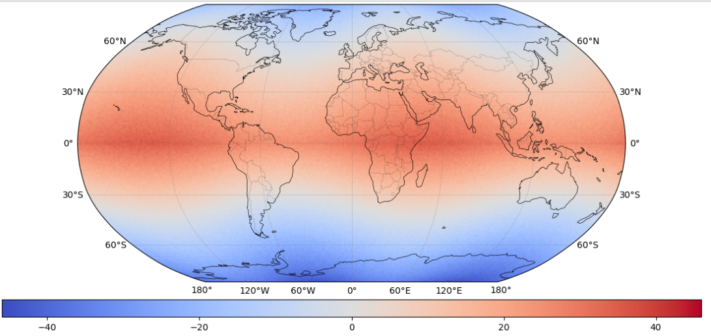

The week of 14-Jul-2025 feels like one of the hotest in the UK. This event spaks my curiosity about public data that contains records of sea and atmospheric temperatures around the world. National Oceanic and Atmospheric Administration (NOAA) provides global temperatures records that can be used to analsys the average temperature around the world.
The goal is to create a heatmap visualization of the average temperature around the world between 14-Jul-2025 and 20-Jul-2025.
The code shows how to use the National Oceanic
and Atmospheric Administration NOAA's
API to extract global temperature data
to create a heatmap visualization of
the average temperature around the world.
The code uses the requests
library to make a GET request to the NOAA's
API and retrieve the temperature data.
The data is then processed to extract the
relevant information, such as the date,
latitude, longitude, and temperature.
The data is then used to create a heatmap
visualization.
The main libraries used to create the heatmap
were cartopy and
matplotlib .
The cartopy library was used to
create the map projection and to plot the
temperature data on the map. The matplotlib
library was used to create the heatmap visualization.
The data was filtered to include only the records
from 14-Jul-2025 to 20-Jul-2025, and the average
temperature was calculated for each geographical
location. The heatmap was then created using the
imshow function from
matplotlib .
The heat map below shows that areas located near the Equator experience temperatures between 30 and 40 degrees celsius, while areas located in the poles experience temperatures between -10 and 10 degrees celsius. The average temperature in the UK was around 20 degrees celsius during this week.

A possible extension of this project is to create the same visuabliation for the UK only, or to create a time series visualization of the average temperature in the UK over a longer period of time, such as a year or a decade. This would allow to see how the average temperature has changed over time and to identify trends and patterns in the data.